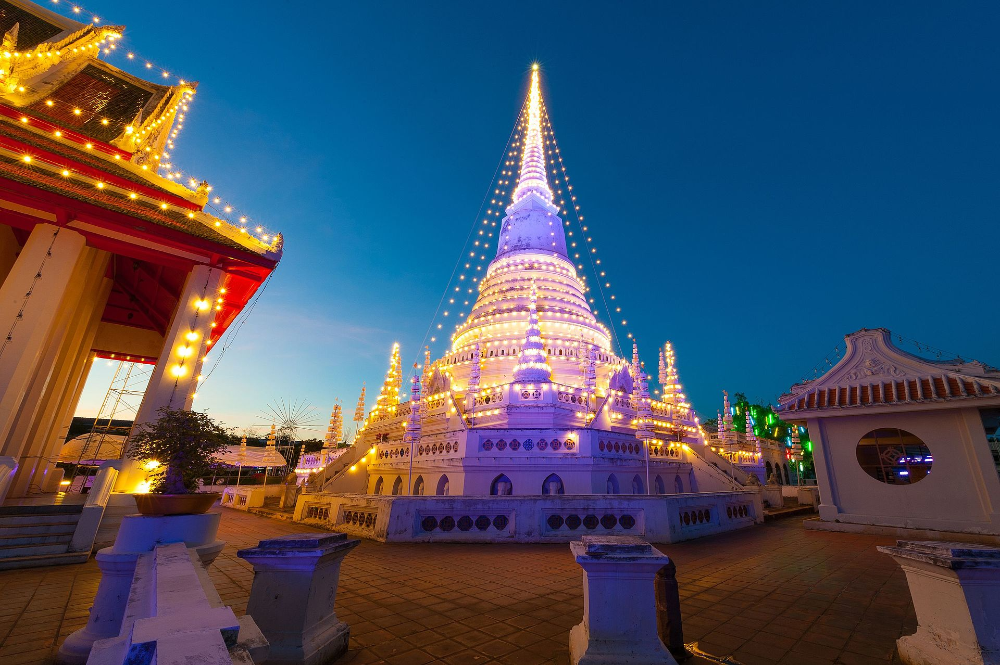
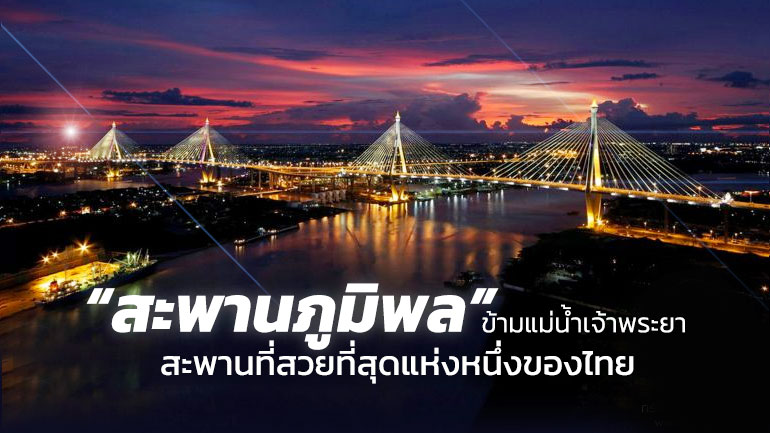

พระสมุทรเจดี พระเจดีย์กลางน้ำ
พระสมุทรเจดี พระเจดีย์กลางน้ำ แห่งนี้สร้างขึ้นในสมัยพระบาทสมเด็จพระพุทธเลิศหล้านภาลัย รัชกาลที่ 2 พระสมุทรเจดีย์นี้ถือเป็นสัญลักษณ์สำคัญและเป็นปูชนียสถาน
คู่บ้านคู่เมืองสมุทรปราการอีกด้วย โดยภายในจะบรรจุ พระบรมสารีริกธาตุ พระชัยวัฒน์ และ พระปางห้ามสมุทร

สะพานภูมิพล
สะพานวงแหวนอุตสาหกรรม
นี่คืออีกหนึ่งสถานที่ห้ามพลาดเมื่อไปสมุทรปราการ นั่นก็คือ สะพานภูมิพล หรือเดิมคือ สะพานวงแหวนอุตสาหกรรม เป็นสะพานข้ามแม่น้ำเจ้าพระยา แบ่งเป็น สะพานภูมิพล 1 เป็นสะพานข้ามแม่น้ำเจ้าพระยาทางด้านเหนือ เชื่อมระหว่าง แขวงบางโพงพาง เขตยานนาวา กรุงเทพฯ กับ ตำบลทรงคนอง อำเภอพระประแดง จังหวัดสมุทรปราการ
